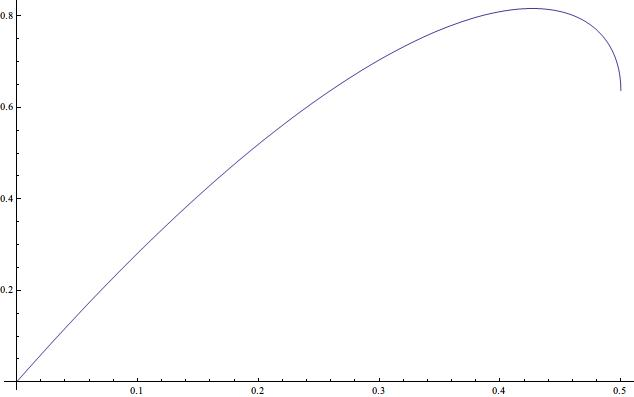
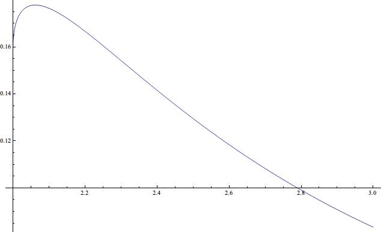
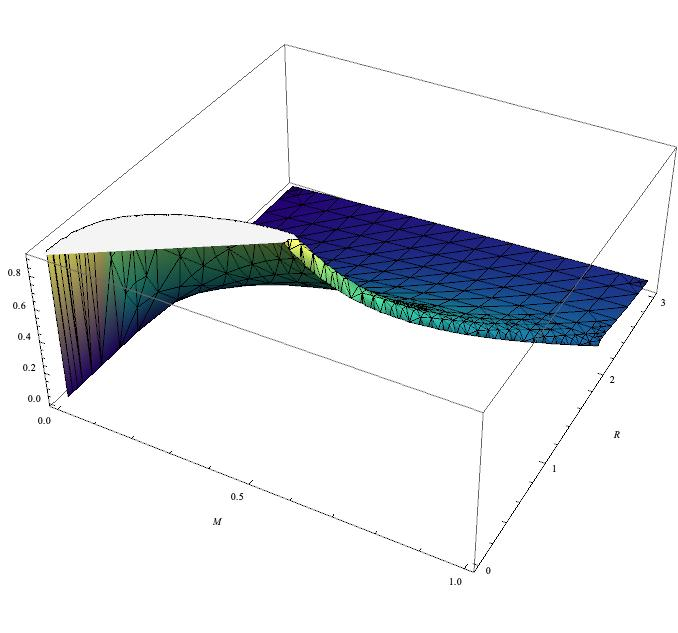

球状尘埃云的密度
之前写了一篇文章黑洞一定密度很大么？提到黑洞的密度讨论起来很麻烦，因为之前有文章讨论黑洞的体元的问题，用一种近似方法来提出黑洞的内部可能体元为零，这样谈密度就很奇怪了。所以这次就不掺和黑洞的密度了，讨论球状的尘埃云的密度的问题。
因为是球对称的球体，所以其线元应该是Schwarzschild的
\begin{equation}
\mathrm ds^2 = -(1-\frac{2m(r)}{r})c^2 \mathrm dt^2 + (1- \frac{2m}{r})^{-1}\mathrm d r^2 +r^2 (\mathrm d\theta^2 + \sin^2\theta \mathrm d\phi^2)
\end{equation}
使用与时间轴正交的超曲面，直接取后面的空间部分。这样一个实际上这个球体的物理的体积应该是
\begin{eqnarray}
V(R,M)&=&\int \frac{1}{\sqrt{1-\frac{2m(r,M,R)}{r}}} r^2 \sin\theta \mathrm dr\mathrm d\theta\mathrm d\phi \\
&=&4\pi^2 \int \frac{1}{\sqrt{1-\frac{2m(r)}{r}}}r^2 \mathrm dr
\end{eqnarray}
其中\(m(r,M)\)是质量分布函数，\(M\)是球体总质量，\(R\)是球体的半径，这个半径是指的在Schwarzschild度规中的坐标值。
用一个特殊的均匀分布
\begin{equation}
m(r)=\frac{4/3 \pi r^3}{4/3 \pi R^3}=(\frac{r}{R})^3 M
\end{equation}
可以对体积积分进行简化
\begin{equation}
V=4\pi^2 \int \frac{1}{\sqrt{1-2 M \frac{r^2}{R^3}}}r^2\mathrm dr
\end{equation}
最后球体的密度可以通过\(\rho=M/V\)来计算。
密度随R或者M变的曲线可以绘制出了。
下图是球体的半径\(R\)一定的时候，密度随着质量\(M\)的变化曲线。

现在可以看到，随着质量增加，密度先是增加，后来减小，有一个峰值。也就是说，如果现在有个区域半径为1，我们不停的往里面添加尘埃，并且使其分布满足上面提到的特定的均匀质量分布，这样这个尘埃团的密度先增加，直到质量达到0.427的时候，密度达到最大值0.816，之后密度反而开始减小，最后直到形成黑洞前，密度减小到\(\2/\pi\)。图中可以看到，在\(M=0.5\)的地方，斜率可能是负无穷。经过计算得知，这个猜想是正确的。也就是说，如果趋势不变，在\(M=0.5\)这个点，球体的密度将垂直降到0！有些奇怪。
进一步想，密度降下来，按照古旧的观点来看，只能是体积减小了，因为我们一直往其中添加物质。从体积的表达式中也可以看出来。那么形成黑洞的时候，体积确实变成了无穷大？
这点有点奇怪。如果体积变成了无穷大，那么很多定律都变得不合理。我们是否可以把部分效应转移到质量上去而使得体积不出现奇性么？甚至体积变为零最好了。因为这样就可以跟Hollowgraphic吻合起来了。
密度的表达式写完整应该是这样的：
\begin{eqnarray}
\rho(M,R)&=&\frac{-2 R\sqrt{M(-2M R^2+R^3)}+\sqrt 2 R^3 \arcsin (\sqrt{2 \frac{M}{R}})}{8 (\frac{M}{R})^{3/2}}\label{eqn:densityMR}
\end{eqnarray}
这里面的\(M\)是引力质量，因为这个质量要用来对时空的度规产生影响，从而顺便改变体积积分。这个是很麻烦的，因为改动之后还有保持质量、密度和体积的表达式的自洽性。
如果引力理论不是像Einstein那样使用等效原理，而是对质量这个概念作了手脚，比如引力质量换成场的耦合系数之类，就可以实现引力质量随着引力场强增加而减小的效果。具体如何实现，可以拿Scalar Tensor理论来看看。
不过改动强引力场的部分会对宇宙学造成比较大的影响，因为一般要求早期宇宙的引力理论不要与Einstein的差别太大，至少造成的可观测效果不要有太大偏离。
下图是球体的质量\(M\)一定的时候，密度随着半径\(R\)的变化曲线。

用来补足上面的分析。现有一个质量为1的尘埃球，当\(R\)从3开始越来越小的时候，密度先变大后变小。峰值出现在\(R=2.062\)的地方，最大密度为\(\rho=0.178\)。当\(R=2\)时，密度为\(\rho=2/\pi\)。如果半径小于2，就会成为黑洞了。与上面的讨论质量的情况吻合。
当然，如果想比较完整的了解一下这个函数的特性，可以做出3D视图

其实还有个值得思考的问题，上面这个讨论对于不同的质量分布，是不是都适合的？比如换另一种均匀质量分布的表达式？
另外一个很严重的问题在于，计算Energy-momentum tensor比较好，此文的这些计算太粗糙了。
计算和可视化用到的Mathematica文件放在这里。
如果解压存在问题，可以换7-zip来解压，因为我使用7-zip来打包的。

最近评论